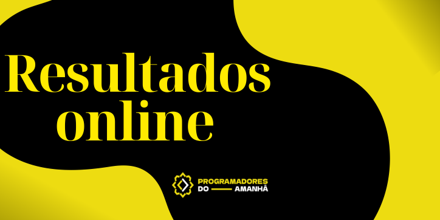

Bem Vinde a Secretaria de Saúde!
A Prefeitura do PDA, através da Secretaria Municipal de Saúde, promove nos dias 19 e 22 de outubro, no
CRAESM – Centro de Referência e Atenção Especializada à Saúde da Mulher, atividades em alusão à campanha
Outubro Rosa, no município dos Programadores do Amanhã.
No dia 19/10, a direção do CRAESM realizará um evento público, com marcação de exames, sorteio de
brindes e ação gratuita, com a equipe de Beleza da FUNDEC. No sábado, 22/10, será realizada palestra,
tratando sobre os temas principais da campanha Outubro Rosa, e um mutirão de exames, com os seguintes
serviços: mamografia, ultrassonografia transvaginal, ultrassonografia mamária, videohisteroscopia,
densitometria óssea, preventivo; teste rápido de Sífilis, hepatite e HIV; inserção de DIU e planejamento
familiar. Importante destacar que os exames serão realizados mediante marcação e apresentação do
encaminhamento médico.
Agende sua Consulta Online!
A Prefeitura do PDA, através da Secretaria Municipal de Saúde, deu início, nesta segunda-feira (17/10),
ao serviço de pré-agendamento online para consultas. Podendo escolher o Bairro e o Horário da
consulta.
Consulte o Resultado do seu Exame Online!

A Prefeitura do PDA, através da Secretaria Municipal de Saúde, deu início, nesta segunda-feira (17/10),
ao serviço da consulta do resultado de alguns exames online. Você irá precisar da sua carteirinha do SUS, CPF, Nome completo e E-mail.